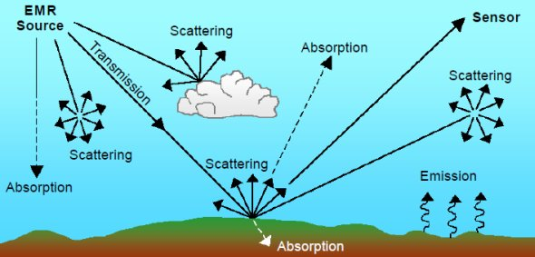
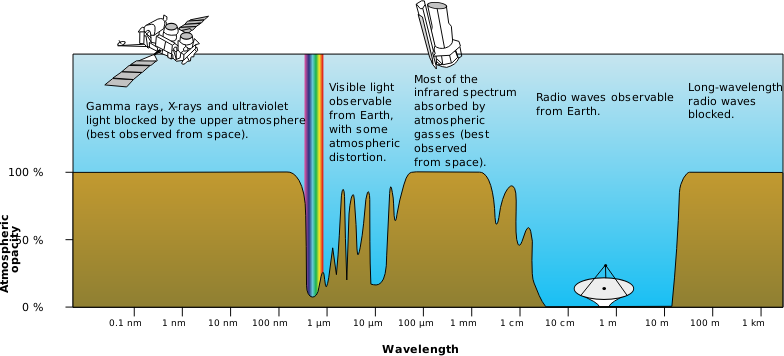
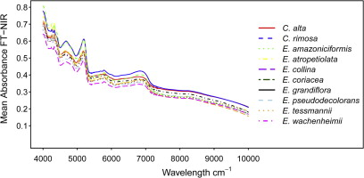
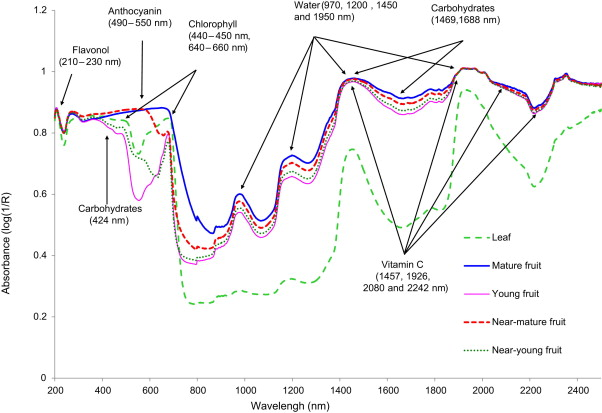

1 Week 1
Introduction to Remote Sensing
Summary
Definition of Remote Sensing
According to NASA, remote sensing refers to information obtained at a distance. These sensors are placed on satellites or aircrafts and they detect and document reflected or emitted energy.
What kinds of energy?
TO cut it short, the answer is Electromagnetic Radiation (EMR). This energy travels in different forms of waves through the atmosphere. While human eyes only detects visible light, the sensors can utilise the full range of the electromagnetic spectrum to collect data.
Electromagnetic Spectrum (Source: NASA Science)
Sensor Types
There are two types of remote sensors: active and passive sensors.
Active sensor:
- emits electromagnetic energy and receives the reflected energy
- can observe areas under most conditions as most active sensors operate in the microwave band of the electromagnetic spectrum
- requires power source - solar energy
- affected by space weather - solar flares
Passive sensor:
- usually detects reflected energy
- used for measuring physical attributes, such as land/sea surface temperature and vegetation cover
- has limitations in observing areas in the presence of dense cloud cover

Passive and Active Sensors (Source: NASA)
Does EMR interact with other factors?
Yes, these radiations are often influenced by Earth’s surface and atmospheric conditions, which might distort the original information.

EMR’s interaction with surface and atmosphere (Source: Daneshgar, 2015)
4 Resolutions of Remote Sensing Data
Spatial resolution: sizes of the raster cells
Spectral resolution:
- Values for each wavelength across the electromagnetic spectrum creates a spectral signature
- Every object has its own unique spectral signature, thus it can be used for identifying a specific object
- But spectral resolution is often affected by atmospheric particles which absorb parts of the spectrum

Atmospheric Electromagnetic Opacity (Source: GIS Geography)
Temporal resolution: frequency of the recorded data
Radiometric resolution: sensor’s ability to detect subtle differences in energy which determines the quality of images
Application
In the context of climate change, the ability to map tree types are important as they are closely linked to biodiversity. As mentioned earlier, each feature has different spectral signatures. Durgante et al. (2013) have discovered that spectral signature of tree species was better than DNA identification in distinguishing tree species. The researchers used ‘Fourier-Transform Near-Infrared (FT-NIR)’. It obtained the best results of 99.4% of correct specimen identification when using 36 spectral readings per specimen. This somehow opens a new, cost- and time-efficient avenue in mapping forest resources. Their research is meaningful in a sense that it enables us to identify types of forests in which forests are not easily accessible by humans or should be intact from human interferences.

Spectral signatures of each tree (Source: Durgante et al., 2013)
The potential of spectral signature can also be found in the business sector. Yang, Lee, and Williamson (2012) suggested that spectral signatures could be employed to blueberry yield estimation system. The research team confirmed six-class blueberry classification - 233, 551, 554, 691, 699, 1373 nm - yielded the best results. This showed the potential of the spectral signature in developing fast and low cost blueberry detector. Furthermore, this research expands the use of spectral signatures from academia to industry, and suggests that the use of spectral signature can be boundless.

Different absorbance rate depending on blueberry’s growth (Source: Yang and Williamson, 2012)
Personal Reflection
As a person who is interested in urban green spaces, the spectral resolution was an interesting concept. After understanding how it can be applied in both academia and industry, I wondered whether the health of green spaces in a city can also be measured with it. Furthermore, I was wondering whether there are any methods that improve the quality of data obtained from passive sensors as they cannot obtain a good quality data in the presence of bad weather. Under the circumstances where we have passive sensors, are there any techniques that could correct images?
References
NASA EarthData. (n.d.) Available at: <https://www.earthdata.nasa.gov/> (Accessed: 26.01.2023)
GIS Geography. (2022) ‘Why the Atmospheric Window Matters in Earth Science’[Online]. Available at: <https://gisgeography.com/atmospheric-window/> (Accessed: 26.01.2023)